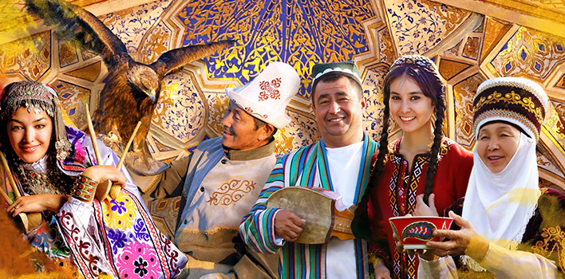
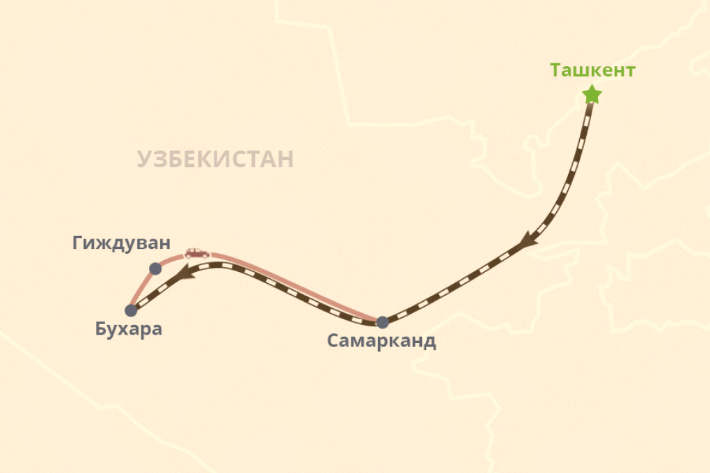

Групповой тур в Узбекистан на Навруз
Откройте для себя волшебство Навруз в удивительном Узбекистане! Присоединяйтесь к нашему групповому туру, чтобы погрузиться в уникальную атмосферу весеннего праздника. Путешествие начнется с древней Бухары, где вы окунетесь в историю на арке Калон и познакомитесь с красотой Лаби Хауз. Затем нас ждет Самарканд, где великолепие Самаркандского Эмирского Дворца оставит вас в восторге. Не упустите возможность взойти на вершину Чар-Минара и посетить мавзолей Исмаила Самани. Погрузитесь в атмосферу местного базара в Бухаре и насладитесь ароматами и вкусами. Путешествие в Узбекистан на Навруз – это встреча с традициями, гостеприимством и красотой, которая оставит незабываемые воспоминания!
Дни тура
Ранний завтрак в отеле. Выписка из отеля. Трансфер на жд вокзал. На скоростном поезде вы отправитесь из Ташкента в Бухару, где вас встретит водитель и доставит в отель. Заселение в отель в 14:00.
В холле гостиницы вас будет ждать гид для проведения экскурсии в историческом центре Бухары, включенном в Список Всемирного наследия ЮНЕСКО:
- Цитадель Арк (IV век) - древний символ государственной власти, в настоящее время здесь находится музей.
- Мавзолей Саманидов (IX-X веков) - самое древнее кирпичное здание в Центральной Азии.
- Мавзолей Чашма Аюб – его выделяет необычная архитектура и интересная легенда о пророке Иове (Айюбе). Медресе Мири-Араб – часть архитектурного ансамбля Пои Калян. Мечеть Магоки-Аттори - самая древняя мечеть в Бухаре (XII век). Осмотр медресе Улугбека (XV век) и медресе Абдулазизхана (XVII век).
- Прогулка по четырем торговым куполам (XV-XVI вв). Ансамбль Ляби-Хауз (крупнейший искусственный водяной резервуар средневековой Бухары XIV-XVII вв.). Этот ансамбль включает в себя несколько крупнейших медресе - медресе Ханака и Кукельдаш (XVI век), а также медресе Надир Диван Беги (XVI век).
Свободное время. Ночь в отеле в Бухаре. Продолжительность экскурсии: 6 часов
Завтрак в отеле. Праздник Навруз отмечают в 21 марта по всему Узбекистану. Это яркое торжество проходит с веселыми танцами, песнями и, конечно, традиционными угощениями. Вы сможете отведать особую самсу, начиненную зеленью, которую готовят только весной. Кроме того, вам обязательно предложат попробовать сумаляк – блюдо из пророщенной пшеницы. В ходе вашей самостоятельной прогулки вы можете посетить: Площадь Арк и Ляби Хауз. А также приобрести яркие сувениры на память.
Трансфер на жд вокзал и отправление в Самарканд на скоростном поезде. Прибытие в Самарканд. Ночь в отеле.
Завтрак в отеле. В холле гостиницы вас будут ждать гид и водитель, чтобы отправиться в экскурсию по самым знаковым достопримечательностям Самарканда:
- Площадь Регистан, которая была центром Самарканда на протяжении многих веков и является таковым по сей день.
- Биби-Ханум – соборная мечеть, с чьим строительством связано множество легенд и поверий.
- Сиабский базар – колоритный пёстрый и шумный восточный рынок, где вы можете купить специи, сладости, знаменитые самаркандские лепешки и сувениры на память.
- Обсерватория Улугбека - внука Амира Тимура, правителя Самарканда и великого ученого средневековья. Комплекс Шахи-Зинда – великолепный ансамбль мавзолеев самаркандской знати.
- Мавзолей Гур-Эмир – усыпальница Амира Тимура и Тимуридов.
Ранний завтрак в отеле, затем встреча с гидом и начало экскурсии по Ташкенту – столице Узбекистана, самому большому городу во всей Средней Азии. Выезд из гостиницы до 12:00. Сначала вы отправитесь в Старый город:
- Комплекс Хаст-Имам – религиозный центр Ташкента, где располагаются медресе Барак-хана, мечеть Тилля-Шейха, мавзолей Абу Бакр Каффаль Шаши.
- Чорсу – один из старейших базаров Ташкента. После осмотра достопримечательностей Старого города – поездка на ташкентском метро до центра, где вы увидите: Площадь Амира Тимура с величественным памятником грозному полководцу.
- Площадь Независимости, где расположены административные здания Кабинета Министров и Сената. Академический Большой Театр имени Алишера Навои – театр оперы и балета, основанный в 1939 году и названный в честь известного узбекского поэта.
- Куранты – знаменитый символ Ташкента.
- Музей прикладного искусства, где представлено более четырех тысяч экспонатов и предметов искусства и ремесла (керамика, золотое шитье, ковры, картины, шелк и ювелирные украшения) лучших ремесленников Узбекистана. После экскурсии трансфер в аэропорт. Конец группового тура в Узбекистан на Навруз.
| Начало | Конец | Цена |
| Март 19, Сб | Март 23, Ср | US $ 430 |